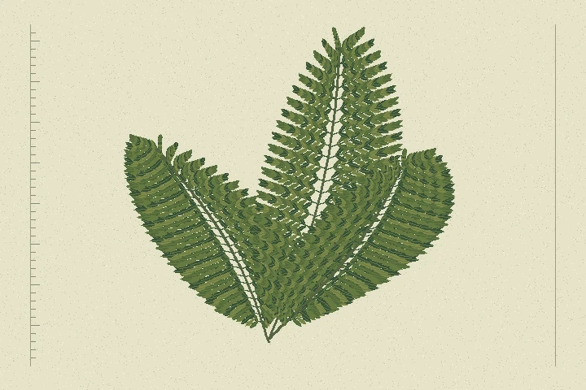

Field Notes — Portfolio.exe
Field Notes — Portfolio.exe FIELD NOTES
Field
Notes.
植物标本室
细看叶子，先看它如何分开。把蕨叶、扇叶和披针形叶并排压在纸上，用放大镜检查每一种轮廓。
HERBARIUM

C:\Studio\Field3 files · v1.0.0
 标本夹 — FieldField Notes — Portfolio.exe
标本夹 — FieldField Notes — Portfolio.exe植物标本室
细看叶子，先看它如何分开。把蕨叶、扇叶和披针形叶并排压在纸上，用放大镜检查每一种轮廓。

标本夹 — Field 电子音乐
电子音乐 植物标本
植物标本